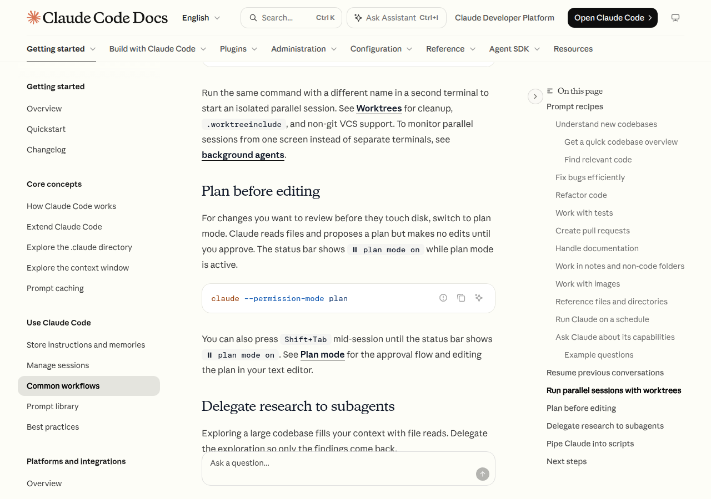
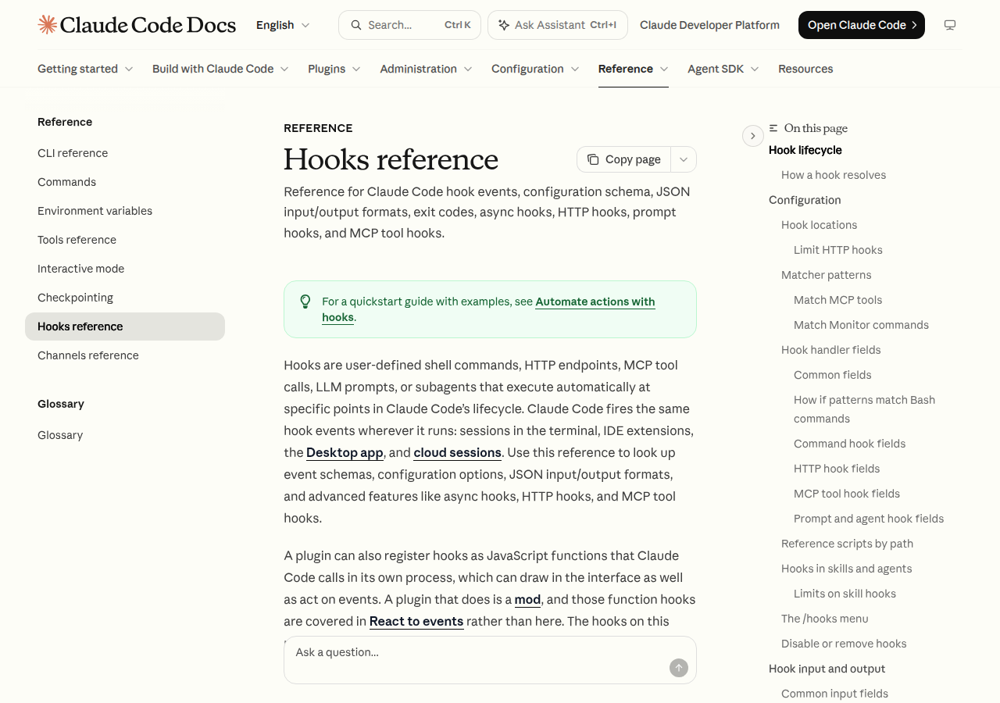

Each image is a browser viewport or a command transcript from 20 Nov 2026. claude, codex, muse, and agy were not on PATH, so there is no running product UI. The manifest is assets/shots/manifest.json.
See the shape first
A shot is a viewport, then a caption, then the URL.
flowchart TD
A[Open the public URL] --> B[Save the viewport]
B --> C[Caption names the URL and the date]
C --> D[No binary means no product session]
What was captured.
Sequence and state
Who talks to whom. This is a map of the page, not a vendor diagram.
sequenceDiagram
participant Browser
participant Page
participant Disk
Browser->>Page: open URL
Page-->>Disk: png plus caption
Disk-->>Browser: hub serves the file offline
States worth naming before you run a tool.
stateDiagram-v2
[*] --> Requested
Requested --> Kept: viewport has text
Requested --> Gap: binary missing
Kept --> [*]
Gallery

Viewport of code.claude.com/docs/en/common-workflows, captured 20 Nov 2026. The heading on screen is Plan before editing. This is the docs site. claude is not installed on the machine that took the shot.

Viewport of code.claude.com/docs/en/hooks, captured 20 Nov 2026. Title in the browser was Hooks reference. The kit hook file is still a placeholder command, not this page.
Viewport of developers.openai.com/codex/config-sample, which redirected to learn.chatgpt.com, captured 20 Nov 2026. The visible line is sandbox_mode = "read-only". Codex CLI is not installed here.